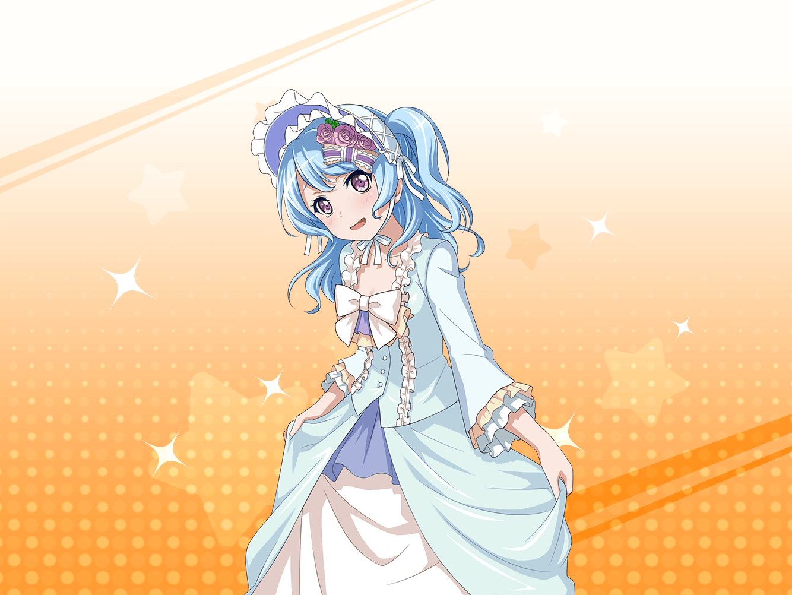

花音
こんにちは、{{userName}}さん。
お仕事帰りですか？
私、本屋さんに寄った帰りなんです
花音
買った本ですか？
えっと、実は結局ほしかった本が見つからなくて、
何も買わなかったんです……
花音
ほしかった本は豪華客船を特集した雑誌です！
花音
最近、すごく豪華客船に興味があって！
なんでかっていうと……
花音
実は先日、こころちゃんの提案で乗ったばっかりなんです！
大きい船で、すごく立派でした！
花音
船の中も、映画に出てくるような装飾で
すごく素敵だったんですよ！
花音
何よりも一番よかったのは夜景です。
海の上だからこそ見える夜景が本当にキレイで……
花音
また、あの夜景が見たいんです
花音
はぁ……大人になったら、また豪華客船に乗ってみたいです。
今回はほんの数時間だけだったから……今度は一週間くらい！
花音
あんなに素敵な船に乗せてくれたこころちゃんには
感謝してもしきれないくらいですっ
花音
ハプニングもあったけど、それもふくめて最高の船旅でしたよ
花音
一番のハプニングというか……
驚いたのは怪盗が薫さんだったことです
花音
さらわれた時はびっくりしたんですが……
まさか薫さんだとは思いませんでした！
花音
よく考えれば、薫さんだってわかるヒントは
いっぱいあったんですよね
花音
私をさらう時は優しく運んでくれたし、
声も似てたし、演技も上手でドキドキしちゃったし……
花音
私、なんで気付かなかったんだろう～！
花音
役に完全になり切っちゃうのは、
さすが薫さんだなって思いました！
あなたもそう思いませんか？
花音
……って、すみません！
わ、私ばっかりこんなにしゃべっちゃって……！
花音
はぁ……ちょっと興奮しすぎちゃいましたね
花音
えっと、あの……気分、悪くされてませんか？
花音
……よかったです。安心しました
花音
あの、お話聞いてくれてありがとうございました。
それじゃあ、またスタジオで会いましょう！